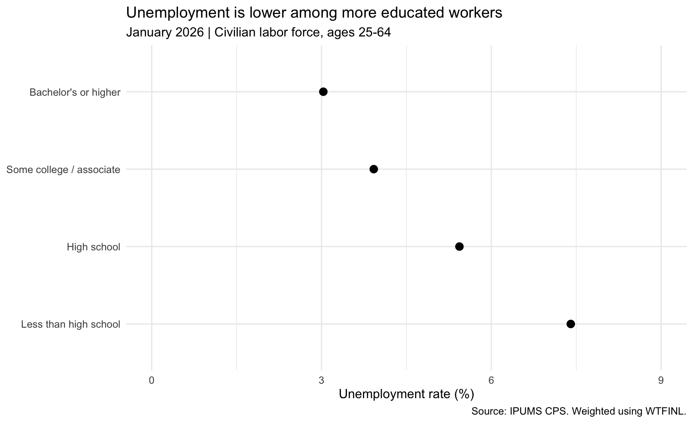
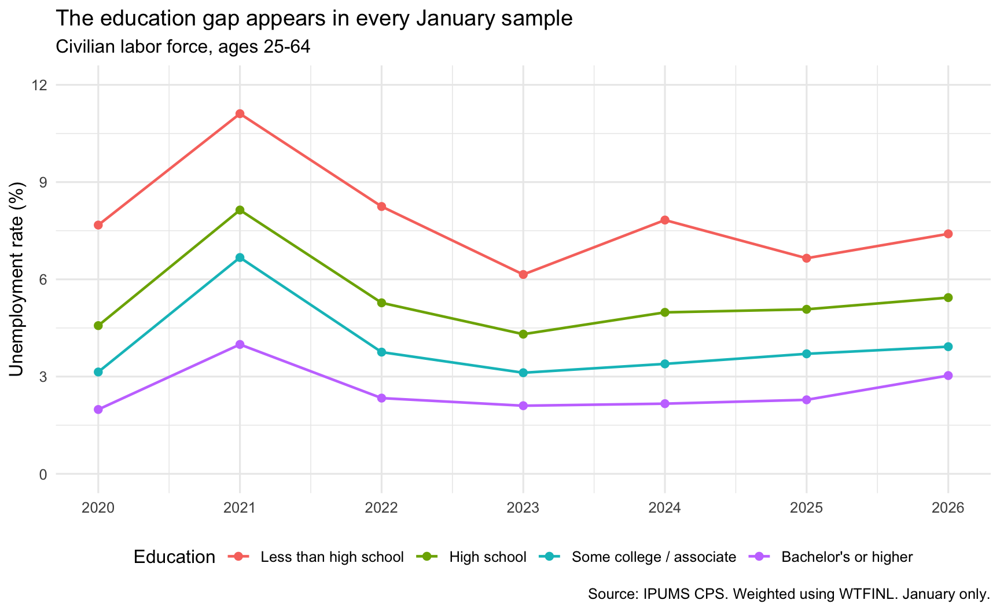
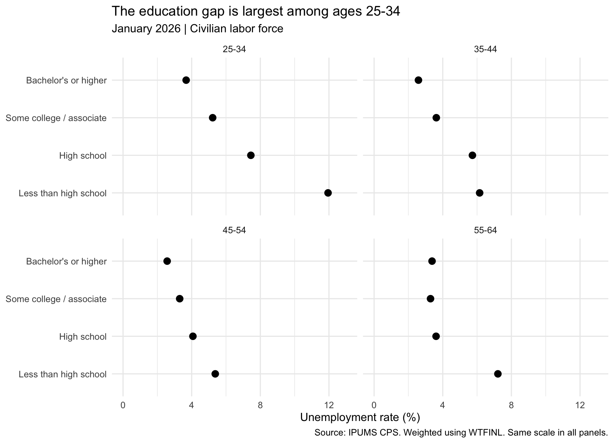

Does more education go with lower unemployment? I wanted to look at this question because education is often related to the types of jobs people can get. At the same time, education is not the only thing that matters. People with different education levels may also have different jobs and work experience.
In this post, I use IPUMS CPS data to compare unemployment across four education groups. I first look at January 2026, then compare January samples from 2020 to 2026. Finally, I look at different age groups to see if the same pattern still appears.
Data and method
The data come from the IPUMS Current Population Survey. I use the Basic Monthly January sample from each year between 2020 and 2026. I focus on civilians ages 25–64 who are in the labor force. I chose this age range because many younger people are still in school, while some older people have already retired.
library(tidyverse)
── Attaching core tidyverse packages ──────────────────────── tidyverse 2.0.0 ──
✔ dplyr 1.2.1 ✔ readr 2.1.6
✔ forcats 1.0.1 ✔ stringr 1.6.0
✔ ggplot2 4.0.3 ✔ tibble 3.3.1
✔ lubridate 1.9.4 ✔ tidyr 1.3.2
✔ purrr 1.2.1
── Conflicts ────────────────────────────────────────── tidyverse_conflicts() ──
✖ dplyr::filter() masks stats::filter()
✖ dplyr::lag() masks stats::lag()
ℹ Use the conflicted package (<http://conflicted.r-lib.org/>) to force all conflicts to become errors
Use of data from IPUMS CPS is subject to conditions including that users should cite the data appropriately. Use command `ipums_conditions()` for more details.
I use EMPSTAT to identify employed and unemployed people, and EDUC to group education. People who are not in the labor force are excluded. Some college includes an associate degree. The highest group includes bachelor’s and graduate degrees.
workers <- cps |>filter( YEAR >=2020, YEAR <=2026, MONTH ==1, AGE >=25, AGE <=64, WTFINL >0, EMPSTAT %in%c(10, 12, 20, 21, 22) ) |>mutate(education =case_when( EDUC %in%c(2, 10, 20, 30, 40, 50, 60, 71) ~"Less than high school", EDUC ==73~"High school", EDUC %in%c(81, 91, 92) ~"Some college / associate", EDUC %in%c(111, 123, 124, 125) ~"Bachelor's or higher" ),unemployed = EMPSTAT %in%c(20, 21, 22),age_group =case_when( AGE <35~"25-34", AGE <45~"35-44", AGE <55~"45-54",TRUE~"55-64" ) ) |>filter(!is.na(education)) |>mutate(education =factor(education, levels =c("Less than high school", "High school","Some college / associate", "Bachelor's or higher" )) )
Since the CPS is a survey, each person in the sample can represent a different number of people in the U.S. population. I use the Basic Monthly person weight, WTFINL, when calculating unemployment rates. The unemployment rate here is the share of people in the labor force who are unemployed, expressed as a percentage.
# A tibble: 4 × 4
YEAR education sample_n rate
<dbl> <fct> <int> <dbl>
1 2026 Less than high school 1893 7.40
2 2026 High school 8806 5.44
3 2026 Some college / associate 8637 3.92
4 2026 Bachelor's or higher 15997 3.03
1. Education and unemployment in January 2026
plot1 <-ggplot(latest, aes(x = rate, y = education)) +geom_point(size =3) +scale_x_continuous(limits =c(0, 9), breaks =seq(0, 9, 3)) +labs(title ="Unemployment is lower among more educated workers",subtitle ="January 2026 | Civilian labor force, ages 25-64",x ="Unemployment rate (%)", y =NULL,caption ="Source: IPUMS CPS. Weighted using WTFINL." ) +theme_minimal(base_size =12)plot1

In January 2026, the unemployment rate was 7.4% for people without a high school diploma, compared with 3% for people with a bachelor’s degree or higher. The difference was about 4.4 percentage points. The other two education groups were in between.
So in this sample, people with more education generally had lower unemployment. However, this is only a comparison between groups, so I cannot say that education itself caused the difference.
2. Does the gap remain over time?
plot2 <-ggplot(rates, aes(x = YEAR, y = rate, color = education)) +geom_line(linewidth =0.8) +geom_point(size =2) +scale_x_continuous(breaks =2020:2026) +scale_y_continuous(limits =c(0, 12), breaks =seq(0, 12, 3)) +labs(title ="The education gap appears in every January sample",subtitle ="Civilian labor force, ages 25-64",x =NULL, y ="Unemployment rate (%)", color ="Education",caption ="Source: IPUMS CPS. Weighted using WTFINL. January only." ) +theme_minimal(base_size =12) +theme(legend.position ="bottom")plot2

The same general pattern appears over time. All four groups had higher unemployment in January 2021 than in January 2020, and rates fell again in 2022 and 2023. The bachelor’s-or-higher group had the lowest unemployment rate in every year shown.
One limitation is that I only use January data. These are not annual averages or seasonally adjusted rates. January 2020 was before the major labor market changes caused by the pandemic, so the graph does not show the changes later that year.
plot3 <-ggplot(age_rates, aes(x = rate, y = education)) +geom_point(size =3) +facet_wrap(~ age_group, ncol =2) +scale_x_continuous(limits =c(0, 13), breaks =c(0, 4, 8, 12)) +labs(title ="The education gap is largest among ages 25-34",subtitle ="January 2026 | Civilian labor force",x ="Unemployment rate (%)", y =NULL,caption ="Source: IPUMS CPS. Weighted using WTFINL. Same scale in all panels." ) +theme_minimal(base_size =12)plot3

Among ages 25–34, unemployment was about 11.9% for people without a high school diploma and 3.7% for those with a bachelor’s degree or higher. The gap was smaller in the older groups. The ranking was not exact everywhere: among ages 55–64, the some-college and bachelor’s-or-higher rates were very close.
Takeaway
Overall, people with more education generally had lower unemployment in these CPS samples. This pattern appears across different years and most age groups, although the size of the gap changes.
This does not mean that education is the only reason for the difference. Occupation, work experience, age, and other factors may also matter. Since these results come from a sample, small differences may reflect sampling variation, especially in smaller groups. The graphs do not show tests of statistical significance.
Data citation: Sarah Flood et al. (2025). IPUMS CPS: Version 13.0 [dataset]. Minneapolis, MN: IPUMS. doi:10.18128/D030.V13.0.